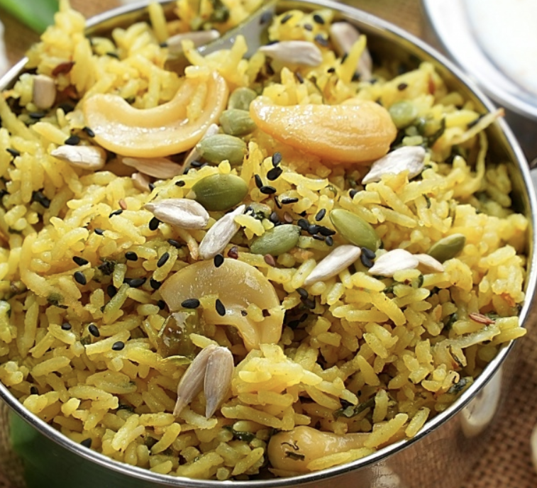

Palak Coconut Rice Recipe
The dish is garnished with roasted cashews, grated coconut, and a mix of sesame, sunflower, and pumpkin seeds, adding a delightful crunch and nutty flavor. Palak Coconut Rice is typically served hot and pairs wonderfully with a refreshing onion cucumber raita, making it a wholesome and satisfying meal.
Ingredients
- 1 tbsp Ghee
- 1 tbsp Oil
- 12-15 slit Cashews
- 1/2 cup Fresh Coconut Gratings
- 1/2 tsp Cumin Seeds
- 2-3 slit Green Chillies
- 1 tbsp Ginger (julienne) - Grating
- 1/2 cup Onion (chopped)
- 2 sprigs Curry Leaves
- 2.5 cups Palak (Spinach Leaves)-(chopped)
- Salt (to taste)
- 1/4 tsp Turmeric Powder
- 1 cup Rice (soaked for 30 minutes)
- 1/2-1 tbsp Black Pepper Powder
- 2 cups Second Extract Coconut Milk / Water
- 1 tbsp Black/White Sesame Seeds
- 1 tbsp Sunflower Seeds
- 1 tbsp Pumpkin Seeds
Preparation
- Roast and Prepare Garnishing: 1). Heat 1 tbsp ghee and 1 tbsp oil in a pan. Add slit
cashews and fry until golden brown, then add fresh coconut gratings and roast until golden. Transfer to
a plate and set aside.
- Sauté the Base: 1). In the same pan, add cumin seeds and let them splutter. Add slit
green chillies and julienned ginger, sauté for a few seconds, then add chopped onions and fry until
translucent. Stir in curry leaves and chopped palak, cooking until the raw smell disappears. Add salt
and turmeric powder, mix well, and sauté.
- Cook the Rice: 1). Add soaked rice and black pepper powder; sauté for 2-3 minutes to
coat the rice with flavours. Pour in 2 cups of second extract coconut milk or water, mix well, cover,
and pressure cook for 3 whistles. Let the pressure release naturally.
- Roast the Seeds & Final Assembly:Heat a pan and dry roast black/white sesame seeds,
sunflower seeds, and pumpkin seeds on low flame until they splutter, then set aside. Once the pressure
releases, open the cooker and fluff the rice gently. Add fried cashews and roasted coconut, then
sprinkle the roasted seeds on top. Serve hot with chilled onion cucumber raita.